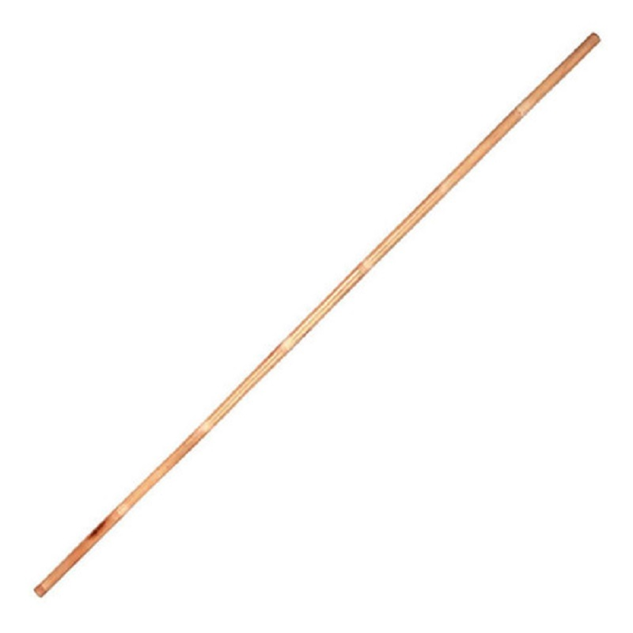

É uma arma japonesa que consiste basicamente de um pau de um comprimento que normalmente varia entre os 180 cm e os 210 cm, podendo ser um pouco mais pequeno, sendo a medida ideal determinada pela altura de quem o usa ou pelo fim a que se destina em combate. Este bastão é geralmente feito de bambu, mas também existe muito em madeira de carvalho. A espessura pode também diferir de bastão para bastão, e a espessura ideal é determinada mais uma vez tendo em conta o porte físico de quem o usa (o tamanho das mãos, a força e rapidez de braços, etc...) e o fim a que se destina em combate.
Na dimensão japonesa da arte de combate, no entanto, a madeira não foi (pelo menos durante a era feudal) um material primário utilizado na manufatura de armas, mas o ferro e o aço. Porém, constituiu uma fértil, embora secundária, dimensão cuja potencialidade estratégica foi explorada, desenvolvida e sistematizada até vários métodos começarem a tomar forma, cada método completo e efetivo dentro e fora dela mesma.
Por causa do fato delas serem comparativamente menos perigosa para a prática que uma lâmina, o bastão e várias outras armas de madeira eram usualmente utilizadas em dojo de treinamentos de escolas de bujutsu, onde as técnicas de armas longas e espadas eram ensinadas. Com o tempo, os uso relativo das armas de madeira se desenvolveu tão bem que, o combate real usando o bastão ou a espada de madeira, foi engajado por guerreiros (mesmo em auto-defesa contra um injusto e potencialmente letal ataque estando o adversário armado ou não).
